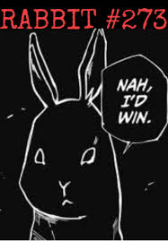

Hello, World!


This is a normal text
This is a bold text
This is a italic text
This is a underlined text
This is a deleted text
This is a big text
This is a small text
This is a subscript text
This is a superscript text
This is a Modelspaced text
This is a highlighted text
John Rabbit (also known as Rabbit 273 or the "Honored Bun") is a popular community-created meme character from the Jujutsu Kaisen fandom. He is not an official character written by Gege Akutami, but rather a satirical scaling joke born on TikTok, Instagram, and Reddit.
Hi there only the text is coloured
Hi there the whole div is coloured
Fruits
- Apple
- Banana
- Berries
- Strawberry
- Blueberry
- Raspberry
Vegetables
- Carrot
- Broccoli
- Spinach
- Leafy
- Root
- Stem
Fruit Descriptions
- Apple
- A round fruit with a red or green skin and a white flesh.
- Banana
- A long, curved fruit with a yellow skin and a soft, sweet flesh.
Store Hours
| Sunday |
Monday |
Tuesday |
Wednesday |
Thursday |
Friday |
Saturday |
| Closed |
9:00 AM - 6:00 PM |
9:00 AM - 6:00 PM |
9:00 AM - 6:00 PM |
9:00 AM - 6:00 PM |
9:00 AM - 6:00 PM |
10:00 AM - 4:00 PM |